Топологически зависимые преобразования
Скругление, фаска и уклон требуют выбора элементов топологии модели. Их можно выбирать по геометрическим свойствам через селекторы или передавать сами рёбра и грани. Для скруглений и фасок поддерживаются также ближайшие точки: выбирается элемент с минимальным расстоянием до точки.
Fillet
Операция скругления тела.
Если тело объёмное - модификации подвергаются ребра. Если плоское - вершины.
Скругления задаются радиусом r и масивом ближайших точек refs. Если refs == None, выбранными считаются все элементы топологии.
fillet(model, radius, referencedPoints)
fillet(model, radius)
model.fillet(radius, referencedPoints)
model.fillet(radius)
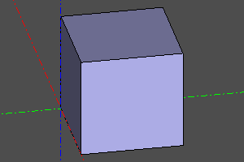
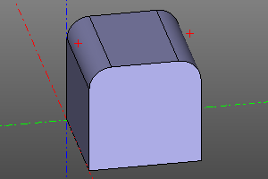
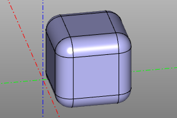
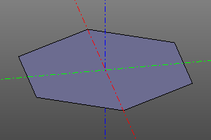
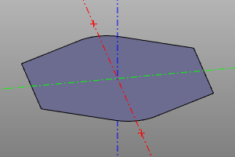
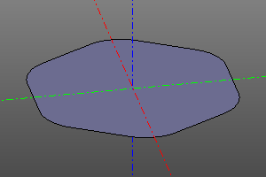
Chamfer
Операция взятия фаски тела. В отличие от скругления применяется только к объёмным телам.
Фаска задаётся расстоянием r, взятым от ребра до линии фаски и масивом ближайших точек refs. Если refs == None, выбранными считаются все элементы топологии.
TODO: несиметричная фаска.
chamfer(model, radius, referencedPoints)
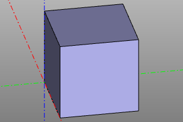
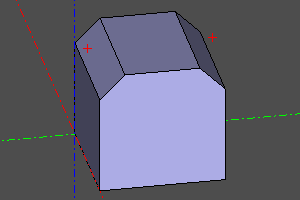
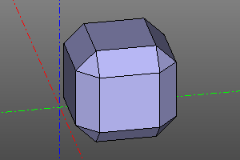
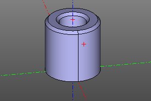
Уклон граней (Draft)
draft наклоняет выбранные грани относительно нейтральной плоскости. Это
нужно, например, чтобы деталь извлекалась из пресс-формы. Положительный угол
снимает материал по направлению вытяжки, отрицательный — добавляет. Нейтральная
плоскость остаётся неподвижной.
По умолчанию направление равно +Z, а нейтральная плоскость проходит через
начало координат перпендикулярно направлению. neutral также принимает плоскую
грань или пару (origin, normal). Выбранные грани должны принадлежать исходному
телу и быть плоскими, цилиндрическими или коническими.
body = box(20)
side_faces = body.faces().filter_by_position(Axis.Z, 10)
narrower = draft(body, side_faces, deg(5))
wider = draft(body, side_faces, deg(-5))
midplane = draft(
body,
side_faces,
deg(5),
neutral=((0, 0, 10), (0, 0, 1)),
)
Thicksolid
Операция создания тонкостенного объёмного тела.
Задаётся прототипной моделью shp и массивом точек, ближайших к удаляемым граням refs.
Также задаётся толщина стенок t. Если толщина стенок положительная, стенки наращиваются наружу. Если отрицательная - внутрь.
thicksolid(model, t=thickness, refs=referencedPoints)
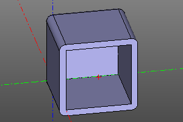
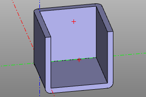